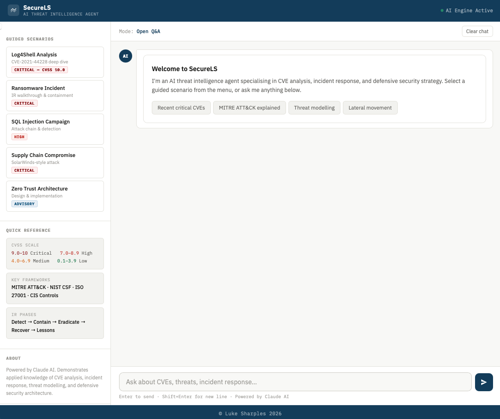

Projects
ISO 27001 Helper
A Python-based chatbot that provides guidance on ISO 27001 Annex A controls. Built to support security professionals in understanding and applying controls in real-world scenarios.
Tech: Python, Information Security
View Code
SecureLS - AI Threat Intelligence Agent
A smart tool created using Claude that gives you:
- 5 guided scenario walkthroughs accessible from the sidebar
- Free-form Q&A for any infosec question
- Quick-start prompt chips on the welcome screen
- Severity badges, CVSS reference panel and framework quick-reference
Tech: Threat Intelligence, AI, Security Analysis
Live Demo